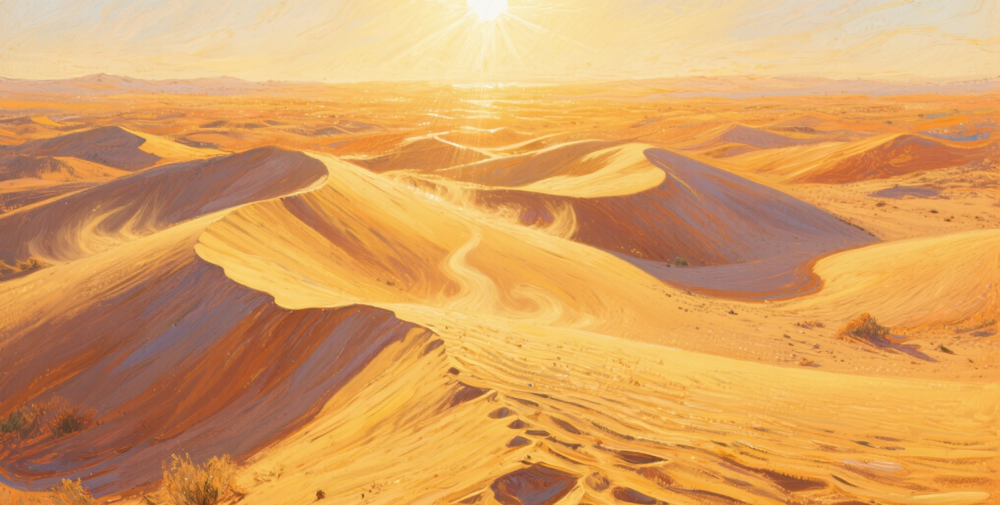

关于本项目

“红医师”是一个由笔者发起的医疗公益项目，旨在汇聚医疗行业的资讯与实践经验，借助现代科技手段，让公众能够更加便捷地获取专业医疗知识。在科技迅猛发展的时代，推动医疗保障的现代化，是“红医师”始终不懈探索的方向与使命。
“红医师热射病防治”平台，作为“红医师”项目的重要子栏目，专注于为可能面临热射病威胁的人群、医疗从业者以及广大公众提供科学、实用的知识支持，帮助大家快速了解这一危重疾病的特征与应对方法，从而提升社会整体应对突发健康危机的能力。
作为一名长期奋战在医疗救援一线的工作者，我深知热射病的严峻危害。无数人曾因中暑而痛苦不堪，甚至有人因此失去了宝贵的生命。基于这一现实，我结合临床指南、个人经验以及热射病防治专家组的权威指导，倾力打造了这一资源平台。我始终坚信：生命的健康是我们学习、工作与生活品质的根本保障。为此，我诚挚呼吁每一个人积极学习热射病的预防、预警与急救知识，并将这一平台分享给更多需要帮助的人，让关爱传递更远。
目前，“热射病防治”平台仍在不断完善之中，我真诚欢迎您提出宝贵的意见与建议。我将全力以赴，维护好这一公益性学习平台，为守护公众健康贡献绵薄之力。